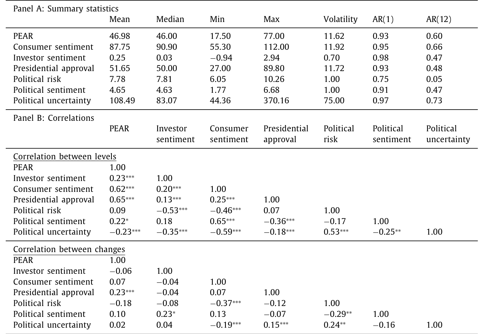
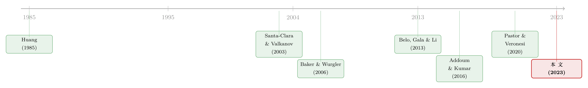

与总统「对得上」的股票，为什么反而跑输了？
本文读的是 Chen, Da, Huang & Wang (2023, JFE)：他们用各类民调拼出一个月度的「总统经济支持率」指数 PEAR，发现对这个指数越敏感（高 PEAR beta）的股票，未来反而每月跑输低敏感股票约 1.00%（风险调整后）。这个「低 PEAR beta 溢价」一个风险模型本该预言成相反的符号——于是问题不在风险，而在定价错误。
1 引言：一道符号被写反的题
先讲一个所有人都听过的「总统之谜（presidential puzzle）」：美股在民主党总统任内的回报，显著高于共和党任内。这是 Santa-Clara 和 Valkanov (2003) 记下的时间序列事实，后来 Pastor 和 Veronesi (2020) 用一个「风险厌恶随政治周期波动」的模型给了它一个体面的解释。
这是一个时间序列的故事——讲的是「整个市场」在不同总统下的涨跌。但一个自然的问题是：总统政治，会不会也渗进横截面里？也就是说，会不会有些公司天生就跟现任总统的经济政策「对得上」，另一些则「对不上」，而这种差异被定价了？
本文的回答是肯定的，但答案的符号让人意外。
如果你顺着风险的直觉去想，会得到这样一条推理链：一只跟总统经济政策高度「同框」的股票，当公众对经济的信心下滑（PEAR 下降）时，它跌得更惨；而 PEAR 下降通常对应着总体风险厌恶上升、经济转坏的坏时候。也就是说，高 PEAR beta 的股票「专挑你最难受的时候陪你一起难受」——它更危险，按理应当索取更高的预期回报。
可数据给出的是反过来的符号：高 PEAR beta 的股票，未来每月少赚 1.00%。风险的直觉，在这里整个被写反了。
于是这篇文章真正要回答的，不是「政治影响股价吗」（那几乎是常识），而是：这条被写反的符号，到底是某种我们还没找到的风险，还是一桩系统性的定价错误？ 全文就围绕这一个问题反复打磨。
2 PEAR：把「经济成绩单」从民调里榨出来
要谈 PEAR beta，得先有 PEAR。
作者要的不是大家熟悉的盖洛普「总统工作支持率（presidential job approval rating, PJAR）」——那是个笼统的打分，把总统在经济、外交、医保上的表现一锅烩了。他们要的是一个只问经济的东西，对应那道经典问题：「你赞不赞成 ×× 总统处理经济的方式？」
数据来自 Roper 民意研究中心的 iPoll。原始有 2,100 份民调，剔掉不规律的、做得太少的（少于五次）机构、以及「当月调查、隔月才发布」的滞后样本后，剩下 1981 年 4 月到 2019 年 12 月间、由 21 家机构做的 1,713 份民调。每个月平均约 3.7 份。把同月多家机构的赞成率一平均，就得到月度的 总统经济支持率（presidential economic approval rating, PEAR） 指数；缺失的 50 个月用上月值补齐，保证它是一条「实时」序列。
这个指数长什么样？均值 46.98，意味着平均而言赞成总统经济处理方式的人不到一半；区间从 17.5 到 77。老布什和小布什任期末尾都跌到 20 以下。作为对照，工作支持率 PJAR 均值更高，为 51.65——最戏剧化的例子是海湾战争后的老布什，工作支持率飙到约 90，经济支持率却只有惨淡的 50。「政绩」和「经济政绩」是两回事，这个缺口正是 PEAR 的信息所在。

Table 1: reports the summary statistics of PEAR and
PEAR 与 PJAR 的水平相关系数是 0.65，与密歇根消费者信心指数是 0.62——它们共享了低频的政治周期。但一旦取变化量（change），相关性就掉下来：PEAR 与 PJAR 的变化相关只有 0.23，与消费者信心的变化只有 0.07。换句话说，月度层面上，PEAR 捕捉的是别的指标抓不到的「当下事件」。这一点很关键——后面所有的检验都建立在 PEAR 的变化上，而不是它的水平。
3 识别策略：什么是 PEAR beta
有了 PEAR，怎么把一只股票「跟总统经济政策对不对得上」量出来？
办法很朴素：看股价对 PEAR 变化的敏感度。对每只股票、每个月，用过去 60 个月的滚动窗口（至少要 24 个观测）跑这样一条时间序列回归：
这里有两处「讲究」，值得停下来说清楚。
第一，为什么要带宏观控制项？ 政治学早就发现 PEAR 与经济景气高度相关（Williams, 1990）。如果不控制经济条件，PEAR beta 就会混进一堆「景气 beta」。作者特意把联邦基金利率、同步经济活动指标、货币基数、市场收益放进回归，逼出 PEAR 里与宏观正交的那一部分。后面他们还会用一长串宏观变量再检验一遍，结论不变。
第二，一个容易被忽略却很要命的细节——党派切换。 60 个月的滚动窗口，很可能跨越一次政党轮替。一旦跨越，前后两段 ΔPEAR 反映的其实是两套对立的经济政策，把它们的 beta 算在一起就成了一锅粥。作者的处理是：基线估计中，当窗口会撞上党派切换时，改用同党派的上一任总统任内的数据来估 beta。这是个聪明的小动作——它把「对得上现任政策」这件事钉死在了「同一种政策立场」上。（他们也确认，用标准滚动窗口得到的 PEAR beta 给出几乎一样的结果，同样是每月 1.00%。）
直觉上，PEAR beta 度量的是一家公司被市场感知到的、与现任总统经济政策的「契合度」：一家正 PEAR beta 的公司，它的生意必须与现任的经济政策合拍，所以它的股价会随着这套政策的「民意打分」起舞。这个度量有两个好处——它是自我揭示的（self-revealed），由股价相关性直接读出，不靠主观判断；它又是动态的，总统换人、政策换向，beta 也跟着换。
4 核心反转：为什么风险解释走不通
现在回到那道被写反的符号。
把股票按 PEAR beta 排序、做多低 beta、做空高 beta，这个多空组合每月赚约 1.00%，而且是在剔除了市场、规模、价值、动量、盈利、投资等因子之后的 alpha。它能撑住一整年（持有期最长到 12 个月仍显著），在六位总统任内每一位都成立，在总统任期的每一年都成立，在民主党和共和党总统下都显著，剔除总统交接前后各六个月也不变。更反直觉的是，它在大盘股、流动性好的股票里反而更强——这就基本堵死了「小盘股、难套利」那类常见的搪塞。
接着，作者把能想到的「风险」嫌疑人挨个排查：
- 时变风险厌恶（Pastor-Veronesi 那一套）：前面说过，它预言的符号是反的。
- 其他宏观风险：他们检验了一大堆宏观变量的 beta，ΔPEAR 与这些宏观变量变化的相关性普遍低于 0.2，最高的（绝对值）也只有
0.16（与消费增长）。把这些宏观 beta 全塞进 Fama–MacBeth 回归，PEAR beta 的系数几乎纹丝不动。 - 政府救助/对冲故事：如果「对得上总统」意味着坏时候能拿到纾困，那高 PEAR beta 股就是个下行对冲，理应低回报。但数据里，NBER 衰退期内高 PEAR beta 股跌得更惨，根本不像被救助；而且样本已剔除金融业，高 PEAR beta 股也不是巨无霸。
- 困境风险：PEAR beta 与 Campbell 等的财务困境度量相关性很低，控制困境后溢价不变。
在 Fama–MacBeth 回归里，作者一口气放进三类控制变量：各种 beta（市场 beta、Jurado et al. (2015) 的宏观不确定性 beta、Baker-Wurgler 情绪 beta）、政治类变量（Kim et al. (2012) 政治地理对齐、Addoum-Kumar (2016) 政治敏感度、Cooper et al. (2010) 政治献金、Belo et al. (2013) 政府支出暴露）、以及一票公司特征（规模、账面市值比、动量、短期反转、特质波动、流动性、困境）。这些预测变量没有一个与 PEAR beta 高度相关。结果：PEAR beta 的系数依然显著为负——它的量级是单变量回归的一半，意味着「所有其他变量加在一起，至多只能解释这个溢价的一半」。
注意作者的措辞克制：论文里反复强调「premium（溢价）只是为了表述方便，并不必然意味着对承担风险的补偿」。这其实是在提前替读者把「溢价 = 风险补偿」这个本能的等式拆掉。
排查到这里，风险这条路基本被走死了。于是反转出现：如果不是风险，那就该是有人把价格定错了。
5 这是定价错误：一条完整的证据链
作者的故事是这样的：市场里有一群情绪投资者（sentiment investors），他们对那些「与现任总统经济政策契合」的公司（高 PEAR beta）的未来盈利过度乐观，尤其在 PEAR 高企的时候；同时低估负 PEAR beta 公司的盈利。理性、厌恶风险的投资者无法完全纠正这种偏误，市场出清价于是对高 PEAR beta 股偏高、对低 PEAR beta 股偏低。等到盈利真正兑现，价格被纠回来，低 PEAR beta 溢价就这么产生了。这个机制还附带一个可证伪的预言：溢价应在高 PEAR 时期之后更大——数据里确实如此。
围绕「定价错误」，论文摆出的证据彼此咬合：
其一，盈利预期里的系统性偏差。 PEAR beta 正向预测分析师的预测误差，负向预测他们未来对长期增长（LTG）和目标价增长（PTG）的修正。说人话：分析师一开始对高 PEAR beta 股太乐观、对低 PEAR beta 股太悲观，之后被迫一路下修/上修。这一条让我立刻想起另一篇把横截面收益几乎全部归因于分析师预期错误的研究（关于这条「预期错误驱动横截面」的思路，可参见《不需要那些「玄学风险」》）。
其二，纠错发生在「真相揭晓」的那一刻。 PEAR beta 负向预测未来的盈余公告日收益；组合分析进一步显示，低 PEAR beta 溢价的大部分恰恰在盈余公告日附近实现——这正是「盈利兑现纠正错价」该有的指纹。
其三，谁在交易。 PEAR 指数的绝对变化与散户换手率的相关系数为 0.19（t = 2.01）；而在高 PEAR beta 股上，这个相关更强，达 0.24（t = 2.50）。也就是说，情绪投资者偏爱的恰恰是高 PEAR beta 股，与错价解释吻合。
其四，连「情绪致高估」的标准剧本也不完全对得上。 按 Stambaugh, Yu & Yuan (2015) 的逻辑，若是卖空受限叠加情绪导致的高估，异象收益的空头腿（高 PEAR beta 股）应在高情绪后更赚。但作者用四个情绪指标都检验了，发现多头腿（低 PEAR beta 股）的 alpha（绝对值）反而更高——这和「卖空约束 + 情绪」的标准故事不符，反倒说明这里的错价两头都有。
把这些拼起来，「定价错误」就不只是一个排除法剩下的残值，而是一条有正面证据支撑的链条。
6 那个把故事讲圆的模型
论文在附录 B 给了一个风格化模型（stylized model），把上面的叙事收进一个均衡里。它的骨架可以这样口述（这里只讲逻辑，不替论文杜撰它没写出的方程）：
经济里同时住着理性的、厌恶风险的投资者，和一群情绪投资者。关键的一笔是，PEAR 指数的水平被用作「情绪投资者占比」的代理——PEAR 越高，情绪投资者的分量越重。情绪投资者会高估正 PEAR beta 公司（与现任政策契合者）的未来盈利、低估负 PEAR beta 公司的盈利。
于是市场出清价对前者偏高、后者偏低；随着未来盈利逐步兑现，价格回归，产生可预测的低 PEAR beta 溢价。模型最有用的地方在于它不是事后解释，而是吐出一个事前可检验的比较静态：既然 PEAR 水平正比于情绪投资者的分量，那么错价（以及随后的溢价）就该在高 PEAR 之后更大。这一条被数据证实，是模型最漂亮的一击。
这是个解释性的、而非可结构估计的模型——它的任务是把「为什么符号是反的」「为什么高 PEAR 之后溢价更大」这两件事统一在一个均衡里，而不是去精确拟合系数。读它时不必纠结参数，抓住「PEAR 水平 → 情绪占比 → 错价幅度」这条因果链即可。
7 文献脉络
把这篇论文放回它生长的那条藤蔓上，会看得更清楚。
最早，Huang (1985) 就注意到股票收益与总统选举有关。真正把它问题化的是 Santa-Clara 和 Valkanov (2003)——他们记下了「总统之谜」这个时间序列事实：民主党任内股市回报更高。这个谜悬了很多年，直到 Pastor 和 Veronesi (2020) 用「风险厌恶随政治周期变化」把它解释成一个风险故事。
但这条线一直是时间序列的、讲「整个市场」的。横截面的另一条线几乎平行地长着：Belo et al. (2013) 发现政府支出暴露高的行业在民主党任内回报更高；Addoum 和 Kumar (2016) 发现政治敏感度高的行业回报更高；Kim et al. (2012) 则从「政治地理对齐」角度发现更靠近政治权力的公司回报更高。这些研究多停在行业层面，且往往绑定在党派上。
本文站的位置，是把这两条线接起来又往前推了一步：它在个股层面、用一个自我揭示且动态的 PEAR beta，刻画公司对现任总统（无论哪个党）经济政策的契合度；并且——这是它和上面所有论文最不同的地方——它落在了错价而非风险的一侧。作者特意验证，低 PEAR beta 溢价用行业去均值化的 beta 一样强，而单纯按行业组合排序却得不到这个溢价，从而把自己和行业层面的可预测性划清了界限。它也接上了「用调查数据检验金融理论」这股新风气。

8 评论与延伸（Q&A + 研究方向）
(a) 几个可能的疑问
Q：PEAR beta 和 Pastor-Veronesi 的政治周期，到底差在哪？
差在「层面」和「符号」。Pastor-Veronesi 讲的是时间序列、整个市场、风险厌恶——市场回报为什么随党派周期波动。本文讲的是横截面、个股、错价——为什么对总统经济政策更敏感的股票反而少赚。后者的符号恰恰是风险模型预言的反面，这正是作者拒绝风险解释的起点。
Q：把「同党派上一任总统数据」拿来估 beta，会不会反而引入了别的偏差？
这是基线设定里最该被盘问的一步。它的代价是用了更久远的历史来代理当下的政策契合度，可能损失时效。但作者给了关键的稳健性：标准滚动窗口（不做这个调整）得到的 PEAR beta 给出同样的每月
1.00%。两条路殊途同归，说明结论不靠这个特定处理撑着。
Q：1.00% 每月，会不会只是某段时间、某几个总统撑起来的？
作者把这点查得很细：六位总统每一位任内都成立，任期每一年都成立，民主党共和党都显著，剔除交接期也不变，甚至在加拿大、德国、日本、英国这四个与美国贸易联系紧密的 G7 国家也显著。它不像是某个时段的偶然。
Q：既然是错价，为什么没被套利者磨平？
反直觉的恰恰在这里——溢价在大盘、流动股里更强，套利成本不该是主要障碍。作者也证伪了「卖空约束 + 情绪」的标准剧本（多头腿 alpha 反而更大）。比较合理的理解是：这是一种缓慢的、绑定在盈利兑现节奏上的纠错，错价的来源（情绪投资者的盈利预期偏差）持续被「再生产」，而非一次性的可瞬间套利的缺口。
Q：PEAR 会不会只是消费者信心/宏观预期换了个名字？
水平上确实高度相关（与消费者信心 0.62、与若干宏观预期约 0.5）。但本文所有检验都建立在 PEAR 的变化上，而 ΔPEAR 与各类宏观（预期）变化的相关普遍低于 0.2、最高仅 0.16。控制这些宏观（预期）后 PEAR beta 的预测力不变——这正是作者论证「PEAR 含有独立于已实现/预期宏观信息」的依据。
Q：这对「总统之谜」的争论意味着什么？
它提供了一个横截面的、偏行为的视角。时间序列的谜也许真有风险成分（Pastor-Veronesi），但横截面上「契合度」被定价错误这件事，把政治-资产定价的解释天平往「投资者认知偏差」那一侧又压了一些。
(b) 几个可能的研究问题与提案
1）PEAR beta 在公司债横截面里成立吗？ 【经济故事】如果情绪投资者高估了高 PEAR beta 公司的未来盈利，那这种乐观应当同时压低它们的信用利差（违约预期被低估），并在盈利兑现时利差走阔——一个债券版的「低 PEAR beta 溢价」。股、债两端的符号是否一致，能直接检验「现金流预期偏差」这个机制。 【可行性】中。需要 TRACE 债券交易数据 + Compustat 基本面，按发行人估 PEAR beta，再做利差的横截面排序与盈余公告事件研究。识别上的难点是债券流动性噪声，但机制清晰、数据可得。
2）外资持有人会不会「中和」掉这个错价？ 【经济故事】PEAR 是地道的「美国国内情绪」。如果错价由本土情绪投资者制造，那么外资持股越高的公司，理应越不容易被这种本土情绪推歪，低 PEAR beta 溢价应当更弱。这是对「情绪投资者」身份的一次间接验证。 【可行性】中。用 FactSet/13F 的外资持股比例做横截面交互。挑战在外资持股本身与规模、流动性内生相关，需要小心控制。
3）把 PEAR beta 搬进 G7 之外、政治周期更剧烈的市场。 【经济故事】本文在四个 G7 国家成立，但这些都是制度成熟、政党温和的经济体。在政治极化更强、政策转向更剧烈的市场，「契合度」的定价错误是否更大？这能检验机制对「政策不确定性强度」的敏感性。 【可行性】中。各国需要可比的「总统/政府经济支持率」民调，这在很多国家并不规整，是主要瓶颈。
4）散户 vs. 机构：谁在制造、谁在纠正这个错价？ 【经济故事】本文已发现 PEAR 绝对变化与散户换手相关（高 PEAR beta 股上更强）。下一步可以把交易拆到投资者类型，直接看是不是散户在高 PEAR 时买入高 PEAR beta 股、机构在盈余公告附近反向接盘。这能把「情绪投资者」从一个抽象假设变成可观测的人群。 【可行性】高。已有零售订单流/换手率数据（如 Boehmer 等的散户识别），事件窗口围绕盈余公告，识别相对干净。
5）PEAR beta 与流动性：错价纠正的「时点」是否与流动性供给绑定？ 【经济故事】若纠错集中在盈余公告日，而公告日往往伴随做市商风险预算收紧、流动性变薄，那么溢价的实现节奏可能与流动性状态交互。这把「行为错价」与「流动性约束」两条线接起来。 【可行性】中。需要日内流动性指标 + 盈余公告事件，识别上要区分「信息纠错」与「流动性补偿」，不算容易，但方向新颖。
9 我的判断
贡献。 这篇论文最漂亮的地方，是把一个看似软绵绵的概念——「公司跟总统经济政策对不对得上」——做成了一个硬邦邦、可计算、动态、且自我揭示的横截面变量，并且诚实地把它推到了与风险直觉相反的符号上，再用一条环环相扣的证据链（分析师预期偏差、盈余公告日纠错、散户换手、高 PEAR 后溢价更大）把「错价」坐实。它把政治-资产定价文献从「行业、党派、时间序列」推进到了「个股、现任、横截面、行为」。
对识别的担忧。 我最在意两点。其一，PEAR beta 是个估计量，60 个月滚动 + 党派调整意味着它本身带噪声，而「噪声 beta」在排序中天然会与流动性、规模等纠缠——作者用「大盘股里更强」「行业去均值仍在」做了不少抵挡，但 beta 估计误差与最终溢价之间的关系，我还想看到更直接的处理（比如 EIV 校正或工具变量）。其二，「情绪投资者占比 ∝ PEAR 水平」是模型里一个很重的设定，它驱动了「高 PEAR 后溢价更大」这个核心预言；这个代理是否稳健，值得更独立的验证。
后续想看到什么。 三件事：一是把这套逻辑搬进信用市场，看股、债两端的符号是否一致（这是我最想做的延伸）；二是把「情绪投资者」从假设变成可观测人群，用投资者层面的交易数据直接抓现行现抓；三是一个更狠的安慰剂——构造一个「与经济无关的总统支持率变化」（如纯外交事件驱动的 PJAR 跳变）作对照，若它不产生横截面溢价，机制会更可信。无论如何，这是一篇把「政治」从背景板变成可定价信号的扎实之作。
参考文献
- Addoum, J.M., Kumar, A. (2016). Political sentiment and predictable returns. Review of Financial Studies 29, 3471–3518.
- Baker, M., Wurgler, J. (2006). Investor sentiment and the cross-section of stock returns. Journal of Finance 61(4), 1645–1680.
- Belo, F., Gala, V.D., Li, J. (2013). Government spending, political cycles, and the cross section of stock returns. Journal of Financial Economics 107(2), 305–324.
- Huang, R.D. (1985). Common stock returns and presidential elections. Financial Analysts Journal 41(2), 58–61.
- Jurado, K., Ludvigson, S.C., Ng, S. (2015). Measuring uncertainty. American Economic Review 105(3), 1177–1216.
- Kim, C.F., Pantzalis, C., Park, J.C. (2012). Political geography and stock returns: the value and risk implications of proximity to political power. Journal of Financial Economics 106(1), 196–228.
- Pastor, L., Veronesi, P. (2020). Political cycles and stock returns. Journal of Political Economy 128, 4011–4045.
- Santa-Clara, P., Valkanov, R. (2003). The presidential puzzle: political cycles and the stock market. Journal of Finance 58(5), 1841–1872.
- Shen, J., Yu, J., Zhao, S. (2017). Investor sentiment and economic forces. Journal of Monetary Economics 86, 1–21.
- Stambaugh, R.F., Yu, J., Yuan, Y. (2015). Arbitrage asymmetry and the idiosyncratic volatility puzzle. Journal of Finance 70(5), 1903–1948.
- Williams, J.T. (1990). The political manipulation of macroeconomic policy. American Political Science Review 84(3), 767–795.